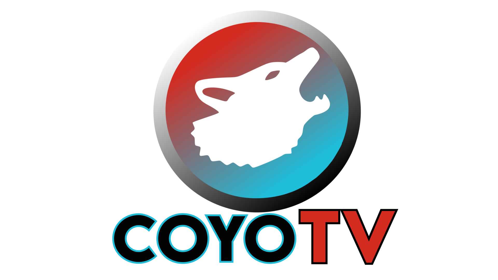

TELEVISIÓN DIGITAL
DESDE NEZA PARA EL MUNDO
COYOTV
EN VIVO
Nuestra señal, desde Neza para el Mundo.
COMPROBANDO SEÑAL
CONECTANDO
● Ver en vivo
▶ Video anterior
⛶ Pantalla completa
Buscando la transmisión en vivo…
← Volver a la portada